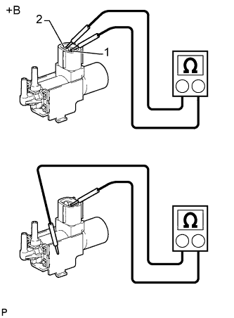
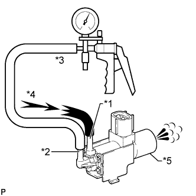
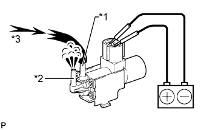

ЭЛЕКТРОВАКУУМНЫЙ КЛАПАН > ПРОВЕРКА БЕЗ СНЯТИЯ С АВТОМОБИЛЯ |
| 1. ПРОВЕРЬТЕ ЭЛЕКТРОВАКУУМНЫЙ КЛАПАН (для опоры двигателя) |
|  |
Измерьте сопротивление в соответствии со значениями, приведенными в таблице ниже.
| Контакты для подключения диагностического прибора | Режим | Заданные условия |
| 1 - 2 | 20°C (68°F) | 37 - 44 Ом |
| 1 - масса 2 - масса | 20°C (68°F) | 1 МОм или более |
| *a | Устройство с неподсоединенным жгутом проводов (электровакуумный клапан (для опоры двигателя)) |
|  |
Проверьте работу электровакуумного клапана.
Создавая разрежение 67 кПа (500 мм рт.ст., 19,7 дюйма рт.ст.) в канале F, убедитесь, что воздух поступает из канала E в фильтр.
| *1 | Канал E |
| *2 | Канал F |
| *3 | Разрежение |
| *4 | Воздух |
| *5 | Фильтр |
|  |
Подайте напряжение аккумуляторной батареи на контакты 1 и 2.
| *1 | Канал E |
| *2 | Канал F |
| *3 | Поток |
Убедитесь, что воздух из патрубка E поступает в патрубок F.
Если результат не соответствует заданному, замените электровакуумный клапан.